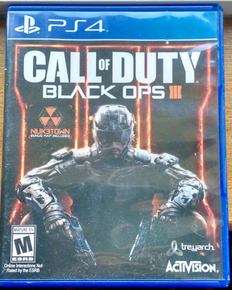

| 
CallofDutyBlackOps3 |
To start I would like to say that CallofDuty Black Ops 3 is a good game. I personally though preferred the older black ops games. I feel the maps aren't that great. The part that i really like about the game is really only the zombies game mode. The zombies maps are new, fun and creative. They are really big compared to older maps in the previous black ops games. I just wish that they would have made the game more realistic with actual shooting in general. If i shoot someone in the head. I have to shot them 3-4 times before they actually die which is not very realistic.